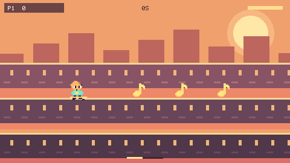

Endless rooftop survival! Riff switches lanes with up/down and hops with A. Catch notes for trick points; jumping earns no free points. Dodge low speakers and stay grounded under high drones. Hazards accelerate each 20-second wave. Four hearts. F fullscreen. Windows installer available. Clean gameplay HUD; sunset skate city art direction.
Play nowInstall for WindowsSurvive with four hearts. Every 20 seconds brings faster, denser hazards. There is no score cap or short victory timer. Your survival time, best scores and player turn save automatically. Pass the controller after each run.
Download and run the installer above. It installs into your user account, adds desktop and Start menu shortcuts, and includes all game files for offline play. It uses Microsoft Edge in a dedicated app window. F toggles fullscreen; Esc leaves fullscreen. Chrome and Edge can also install the browser app from the game’s Install menu.
Use a standard Xbox-style controller or the keyboard controls shown in the game. A starts the next player’s turn after a result. Start toggles music. Back up and restore progress from the start card to transfer saves between the web and desktop versions.
Red Engine 2D / original characters and music / Windows 10 or 11 with Microsoft Edge